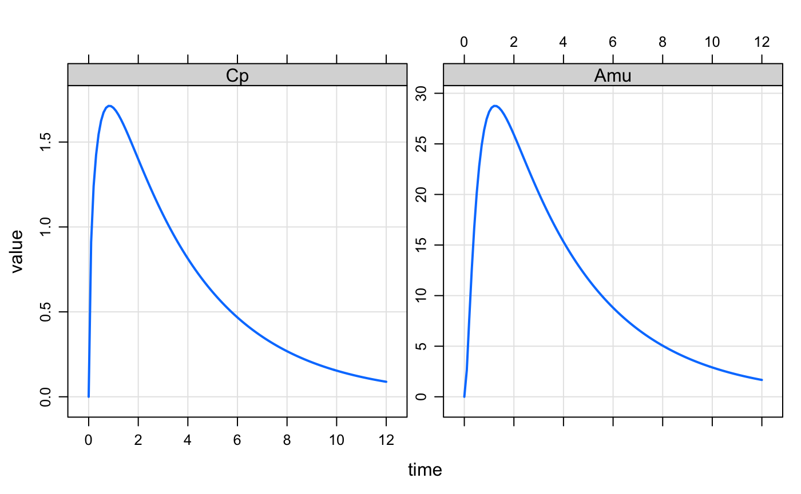
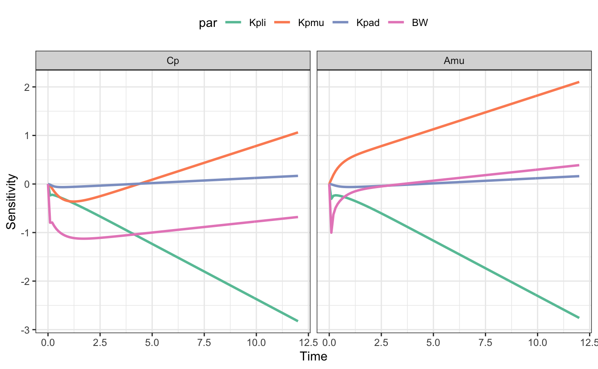
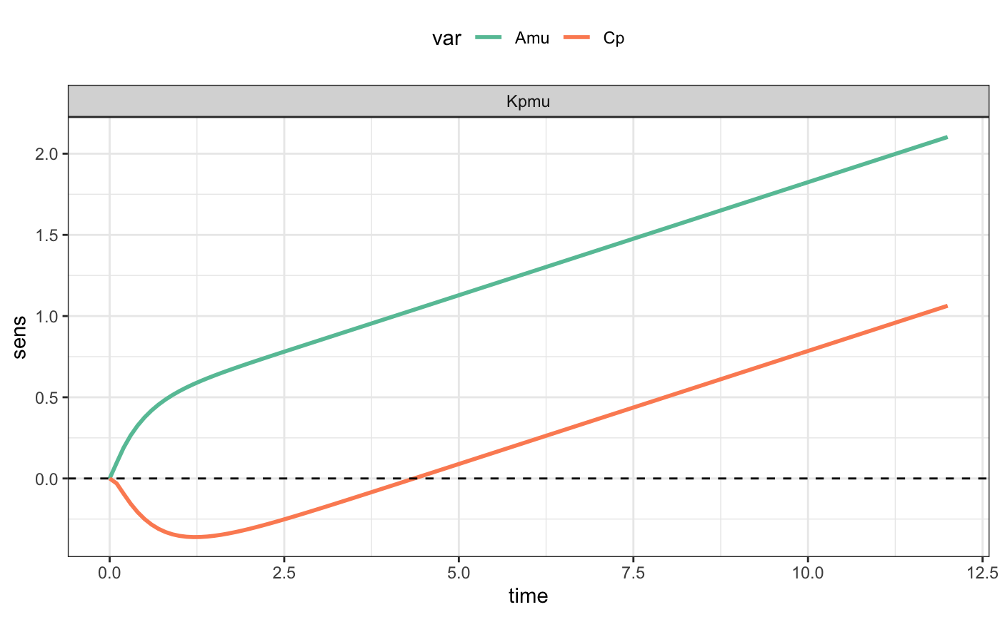

Load the vera package and a PBPK model from the mrgsolve package. We decrease the tolerance a bit as well as the maximum step size.
Create a function that uses the model to simulate a certain scenario. For now, we just simulate a single dose.
fun <- function(p,dose) {
mod %>%
param(p) %>%
ev(dose) %>%
mrgsim()
}
d <- ev(amt = 100)
fun(param(mod),d) %>% plot(Cp+Amu~time)
Use vera::lsa(). We pick the parameters that we want to fiddle with (par):
Kpli liver partition coefficientKpmu muscle partition coefficientKpad adipose tissue partition coefficientBW body weightAlso specify the output that we want to look at (var):
Cp - venous concentrationAmu - amount in the muscle compartmentd gets passed through to the function as dose.
The output is long and ready to send in to ggplot2.
. time var value par sens
. 1 0.0 Cp 0.000000 Kpli 0.0000000
. 2 0.1 Cp 0.913300 Kpli -0.2344372
. 3 0.2 Cp 1.240780 Kpli -0.2207772
. 4 0.3 Cp 1.425315 Kpli -0.2315567
. 5 0.4 Cp 1.546065 Kpli -0.2460310
. 6 0.5 Cp 1.625033 Kpli -0.2619396There is a default plotting method as well.

library(ggplot2)
filter(out, par=="Kpmu") %>%
ggplot(aes(time,sens,col=var)) +
geom_line(lwd=1) + theme_bw() +
scale_color_brewer(palette="Set2") +
theme(legend.position="top") +
facet_wrap(~par) + geom_hline(yintercept=0,lty=2)
See inst/doc/about.md (on GitHub only) for more details.